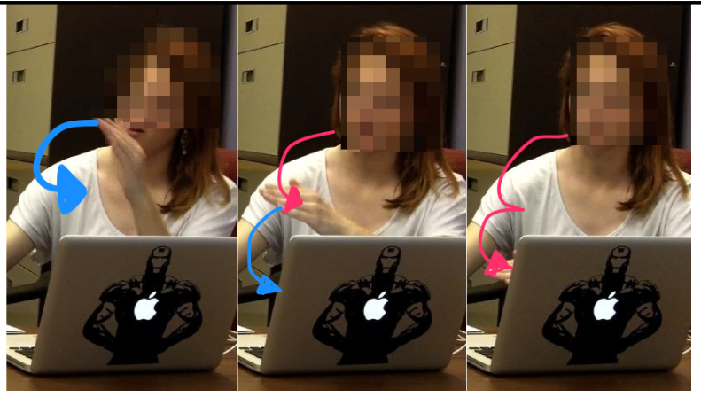

What does Transdown do?
Transdown lets you write transcript and get automatically-generated beautiful web visualizations. So, you can write this:
and get beautiful, styled, tabular output automatically, like this:
| Rebecca's gestural pseudo-coding | |||
|---|---|---|---|
| Time | Speaker | Speech | Media |
| 33:33 | Rebecca | And then my thinking at least, is you should be able to, um, say that "star p of i" /mmhmm/ equals, uh, the title, and then you just do i++, so then it'll move to the next one {makes looping gesture with left hand} /OK/ |

|
| 34:00 | Rebecca | and you just keep saving each of the pointers {left hand makes horizontal chops in the air, like rungs down a ladder} |  |